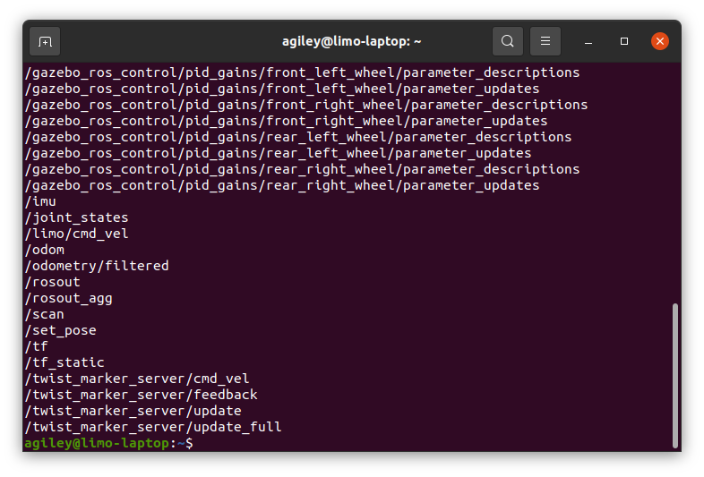
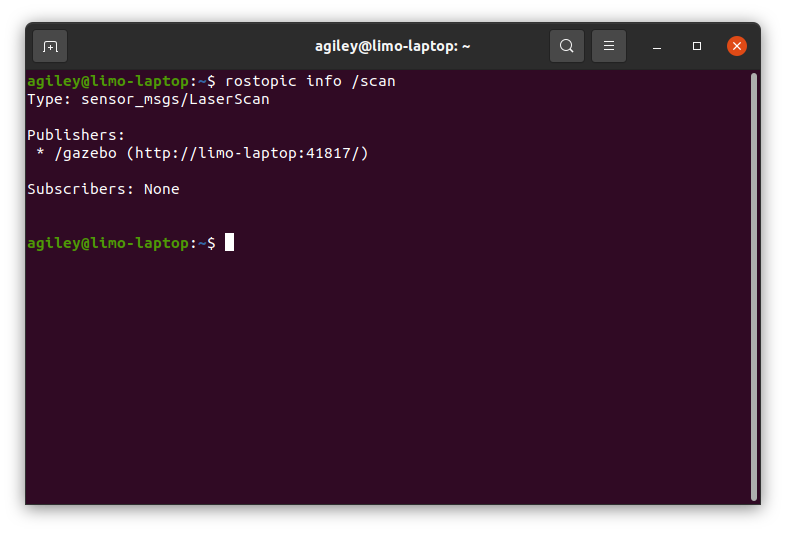

Networking Multiple ROS Machines¶
Setting a ROS master¶
ROS coordinates all messages between nodes using a Master. This a simple program that keeps records of all the nodes and topics on the ROS network. ROS assumes the master is running on the local computer, but that might not be the case when using multiple computers. It is common to run the master on the robot.
To set the master, run this command in every terminal on all of the machines that aren’t the robot.
export ROS_MASTER_URI=http://<robot_hostname>:11311
You can do a quick check to make sure everything is working by running:
rostopic list
As long as ROS is running, you should see a list of topics that are available
If this command hangs, it might be having issues talking to the remote PC. Look at the the next section to fix it
Hosts¶
When you subscribe or publish to a topic, the node will form a connection to any node that is using that topic. To do that, it needs to know where those other nodes are. The node will ask the Ros Master what is using that topic and the master will reply with a list of publishers and subscribers.
You can see the details of this by running:
rostopic info <a topic name>
That will show information like message type and information about the subscribers and publishers. Note beside each publisher or subscriber, there is a hostname. That is how other machines will try to communicate with it.
Normally a hostname is resolved to an IP address using a DNS server, but that often isn’t available in a direct network like this. One solution would be to set the ROS_IP variable on each machine in the network. That would force the machine to register with its IP address instead of its hostname.
Another more common option is to tell each machine the IP address behind the hostname using a hosts file. The first step is to find the IP address of each computer. On each one, run:
ip a
That will display information about all the network devices. However you will be communicating with the machine (wifi, ethernet, etc), note the IP address. On all of the other machines, you will need to add the hostname and IP to the hosts file
sudo nano /etc/hosts